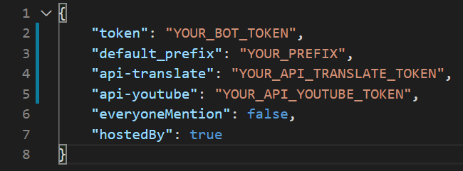
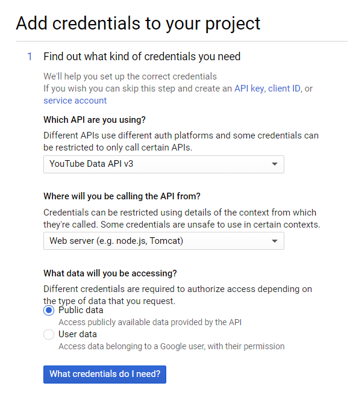
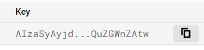
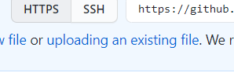

This manual is NOT meant to provide more information than setting up the bot.
1. Install Node.js in your computer.
2. Make an application in Discord Developer Portal.
3. In that application, go to the Bot category and on the Build-A-Bot section, click Add Bot.
4. After creating your bot, on the Build-A-Bot section, copy your token.
5. Now, go to your code editor, and search a config.json file.
- 5.1. I recommend using Visual Studio Code for your code editor.
6. The config.json file should look like this.
7. Replace YOUR_BOT_TOKEN in "token" with your copied token.
- 7.1. Please note that, you MUST NOT replace any variable name, unless you know what you're doing.
- 7.2. Do not delete the quotes, the colon and the comma when replacing YOUR_BOT_TOKEN and/or other values.
8. Replace YOUR_PREFIX in "default_prefix" with whatever prefix you want your bot to have.
9. For "api-translate" (translate command) and "api-youtube" (music command), go to Google Cloud Platform.
- 9.1. In Google Cloud Platform, go to the API & Services category.
- 9.2. After entering API & Services Category, create a new project.
- 9.3. On the top bar, click ENABLE APIS AND SERVICES, and search for Cloud Translation API and YouTube Data API v3, then click ENABLE to enable the APIs.
- 9.4. Go to Credentials > CREATE CREDENTIALS (on the top bar.) > Help me choose (for Cloud Translation API, just click API key.)
- 9.4. Your first step on Help me choose should look like this.
- 9.5. Then click on What credentials do i need? to proceed.
- 9.6. Copy your YouTube Data API v3 and Cloud Translation API API keys.
10. Replace YOUR_API_TRANSLATE_TOKEN (Cloud Translation API) and YOUR_API_YOUTUBE_TOKEN (YouTube Data API v3) with your copied API keys.
11. Install packages by typing in console npm install . (npm install dot, that's not for grammar.)
12. Run the bot with typing node . or node index2.js in your console.
12.1. Open the console with ctrl + `.
(This process is entirely FREE.)
1. Go to GitHub and create an account (if you don't have one.)
2. Create a new repository.
2.1. The repository can be public or private, it's your choice. I recommend the private option.
2.2. Upload horizon's files to your newly created repository.
2.3. There are some ways to upload your files, but this requires the least amount of set-up.
3. Go to Heroku and create an account (If you don't have one.)
4. Create a new application, go to Deploy and on the Deployment Method, click Connect to GitHub and connect to your account.
5. Connect to your newly created repository.
6. Go to Settings on the navbar, go to the Buildpacks section, click Add buildpack.
6.1. Enter this URL on the text area https://github.com/jonathanong/heroku-buildpack-ffmpeg-latest.git (click the link and ctrl + A)
7. Go to Deploy on the navbar, scroll to the most bottom, then click Deploy Branch.
8. Go to Resources on the navbar, on the Free Dynos section, switch Worker to on, and Web to off.
9. You're all set!